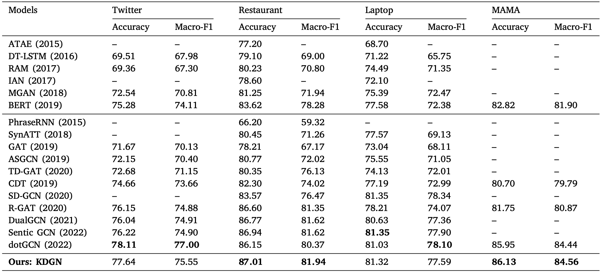

Improving aspect-based sentiment analysis with Knowledge-aware Dependency Graph Network
2023 Information Fusion Paper
Motivation
图结构没有考虑领域知识
Model
Result
本博客所有文章除特别声明外，均采用 CC BY-NC-SA 4.0 许可协议。转载请注明来自 Hexo！
2023 Information Fusion Paper
图结构没有考虑领域知识